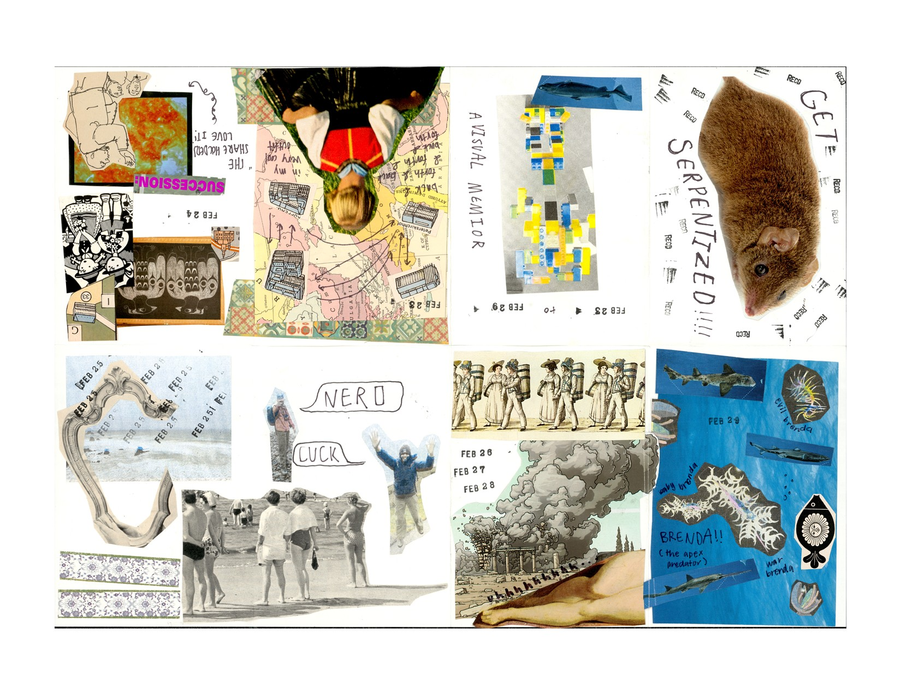
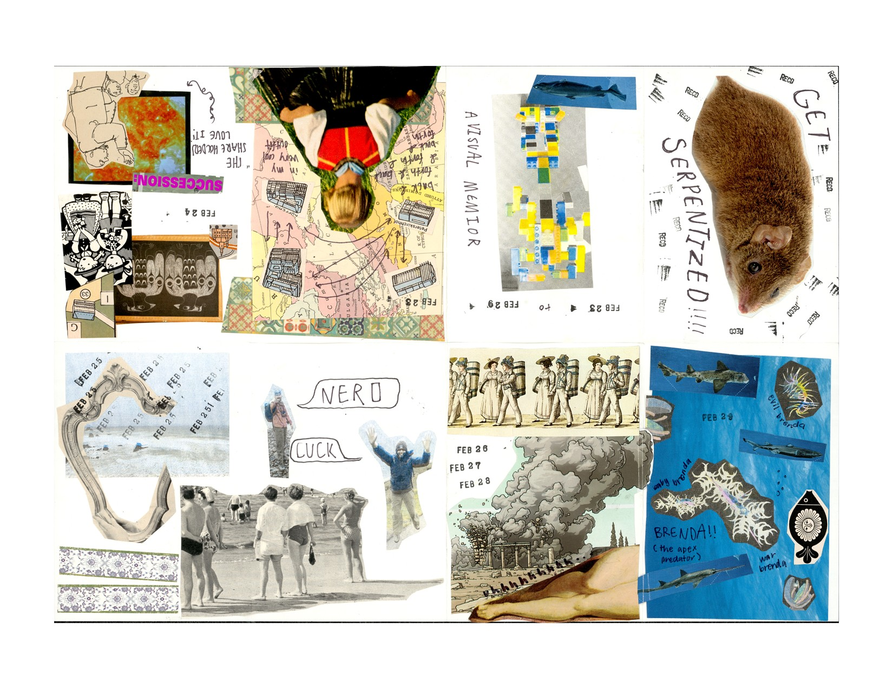

Visual Memoir Workshop
The Visual Memoir Workshop was a two-part workshop I held at the Reed College Visual Resources Center (VRC)
in which I directed participants in developing a collecting practice and creating a visual memoir to document their lives.
The first workshop introduced the project and provided information about personal archival practice. I showed participants how to create journals using a pamphlet stitch
and went over the available equipment in the VRC. Participants were then given a one-week collecting period so that the workshop would be accessible to those who didn't have a
pre-existing collecting practice but wanted to create one!
At the second workshop, participants created their visual memoirs, which I compiled into a book. The goal of the workshop was to explore creative methods of documenting one's life and to create a collective archive. I was interested in the participatory nature of archiving and the interconnectedness of personal histories within broader temporal frameworks. These visual representations of moments, memories, and experiences serve as a collective exploration of individual experiences of time. They are tangible representations of an individual's journey through time, capturing moments, memories, and experiences that shape their identity and legacy.
Inventory of Other Works
In gathering works for the library, my intention was to create a diverse collection that spans a wide range of genres, perspectives, and styles.
Central to my vision was the exploration of diverse temporal experiences and the myriad ways in which time can be documented and understood.
Through the inclusion of works that vary in their approach to timekeeping and storytelling, I sought to highlight the impact of technologies on our
perception of time and the ways in which different historical periods intersect and inform our present moment. While the collection primarily
focuses on contemporary literature, I also sought to incorporate works from various time periods.
Time and Place: A Pocket Book on the Art of Calendars by Alexandra Harris explores different forms of calendar-making, both historical and contemporary.
'Weekend' by Erlend Peder Kvam tells a humorous story about weekend leisure time and its departure from the activities of the work week.
'Buncha Balogney #1' by Jerry James is a collection of artworks that seem to revolve around themes of existential dread and disillusionment with the demands of contemporary society and the relentless pursuit of productivity at the
expense of personal fulfillment. It speaks to the feeling of being trapped in a job that consumes valuable time and energy, reducing individuals to mere cogs in a larger industrial machine.
Black Quantum Futurism: Theory and Practice is a collection of writings that merge quantum physics with afrofuturism,
exploring the intersections of race, gender, space, and time. It challenges traditional notions of time and space, advocating for a nonlinear understanding of reality that acknowledges the interconnectedness of past, present, and future.
'Today Dinosaur' by Will Duncan is a collection of works that address the experience of the digital landscape of the modern age. Like navigating the labyrinthine corridors of the internet,
Duncan's collection captures the frenetic energy and disjointed nature of our digitally-mediated society. Time is experienced in a disjointed, non-linear fashion, where moments blur together in a whirlwind of fleeting impressions. The collection has a sense of urgency and immediacy, reflecting the relentless pace of information production and consumption.
'The Holy' by Andy Leuenberger is a sci-fi comic from the series Dead Time Data and takes place in "Dead Time," which Leuenberger describes as "the interval between units of measurement that cannot be measured and therefore has a potential for error." In the comic, the line between the real and the virtual is distorted by over-stimulation.
'The Philosophy of the Television' by Liam Autumn explores how television shapes one's perception of time and oneself.
'Guff: Issue #2' by Kai Reynolds is a compilation of works in various mediums. Of particular interest to me was the section in which Reynolds documents their journey to their childhood home through the pages of a journal. In the journal, they explore memory and identity in relation to place.
'Compisition Notebook' by Maggie Overby is a zine that describes a childhood moment in which Overby is drinking a Shirley temple, but is interrupted by her mother telling her it is time for dinner.
'Scrap Book,' compiled by Kenneth Spink, is a scrap book containing newspaper clippings about the state of Oregon. The book appears to have been a homework assignment on the history of the state.
Time by Barbara Adam delves into the intricacies of how time shapes and is shaped by human activities, technology, and the environment. The book analyzes the conventional concepts of time, providing a more nuanced understanding that considers its social, technological, and ecological dimensions, ultimately arguing for a greater awareness of time's critical influence on all aspects of life.
'Cosmic Fern' by Sarah Maloney follows two loves who travel to a botanical moon and take a hallucinogenic spore, leading them to reconsider their connection with time and plants.
Cartographies of Time: A History of the Timeline by Daniel Rosenberg and Anthony Grafton provides a detailed historical account of the evolution of timelines, illustrating how the visual representation of time has developed alongside changes in culture, technology, and historical thought.
Revolution in Time: Clocks and the Making of the Modern World by David Landes examines the profound impact of mechanical clocks on global society, detailing how their invention and subsequent evolution drove the standardization of time, influenced industrial practices, and fundamentally altered the structure of daily life, thereby playing a crucial role in the development of modern society.
The Human Organization of Time: Temporal Realities and Experience by Allen C. Bluedorn analyzes how individuals and organizations perceive and manage time, analyzing its influence on behavior, culture, and organizational processes. The book discusses various temporal structures and their implications for personal life and work, emphasizing the role of time in shaping social interactions and organizational effectiveness.
Pressed for Time: The Acceleration of Life in Digital Capitalism by Judy Wajcman argues that digital technology, rather than freeing up our time, has increased the pace of life, contributing to a sense of time scarcity. The book examines how technological advancements shape our perceptions of time and urgency, questioning the notion that increased efficiency leads to more leisure time and proposing a reevaluation of our relationship with time in the digital age.


 
